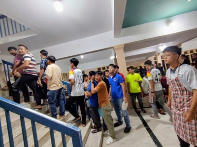
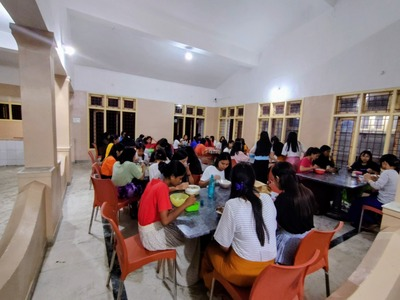
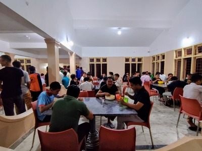
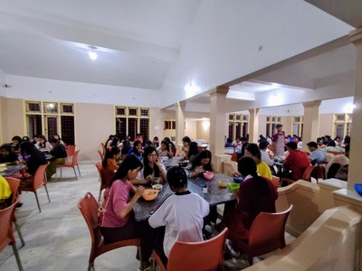

Contact Us:

At South India Baptist Bible College & Seminary (SIBBC&S), 423 students are answering God’s call to ministry. Many come from the poorest regions of Northeast India or as refugees from Myanmar. They face persecution and hardship, yet they have chosen to pursue their faith, trusting God to provide. They understand they won't become rich by following God's call, yet they have committed their lives to spreading the Gospel.
SIBBC&S is a ministry—not a business—committed to training Christian workers to faithfully proclaim the Gospel and serve in ministry. To keep biblical theological education accessible, tuition is just set $680 per year. Yet even this bare amount is beyond reach for many students, most of whom come from deeply impoverished regions. To help them pursue their calling, SIBBC&S offers campus jobs—cleaning, cooking, gardening—so students can work toward their tuition. In addition, the school provides free housing and meals, a daily act of grace that has become a significant financial burden.
Every single day, these students receive three meals, fueling their bodies as they grow in their faith. They are profoundly grateful, knowing their food is a gift from the generosity of others.




Your gift, no matter the size, will have an immediate impact. It is not just food; it is fuel for future pastors, evangelists, and servants of Christ. It's a tangible way to share the Gospel by providing for those who will carry it to others.
Will you consider skipping one snack, one coffee, or one meal to feed a student who hungers for both the Word and daily bread?